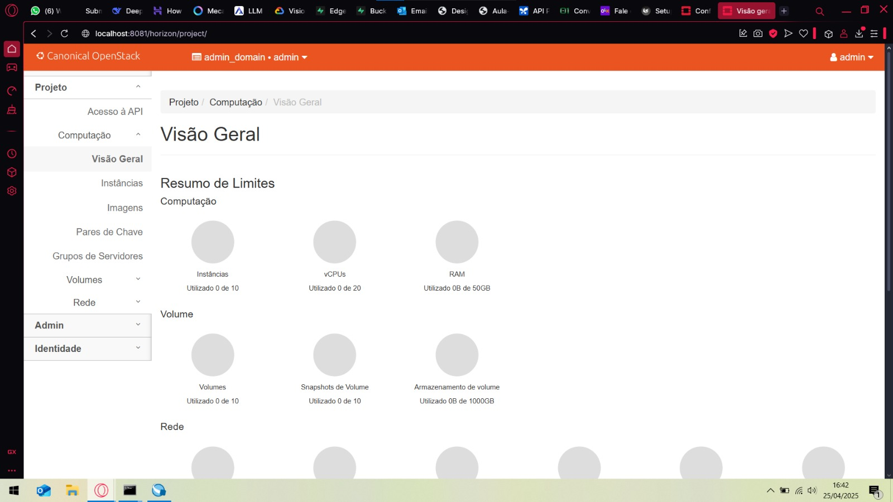

Objetivos
-
Entender os conceitos básicos de Private Cloud.
-
Aprofundar conceitos sobre redes virtuais SDN.
Infra
Este projeto visa construir um ambiente de nuvem privada utilizando OpenStack sobre uma infraestrutura gerenciada por MAAS e Juju, e então implantar uma aplicação específica nesse ambiente virtualizado.
Confira se os seus recursos fisicos seguem, no MÍNIMO, a tabela abaixo, volte ao dashboard do MAAS e crie as Tags conforme descrito:
| Node name | Tag(s) | CPUs | NICs | RAM | Disks | Storage |
|---|---|---|---|---|---|---|
| node1.maas | controller | 2 | 1 | 12.0 | 1 | 80.0 |
| node2.maas | reserva | 2 | 1 | 16.0 | 2 | 80.0 |
| node3.maas | compute | 2 | 1 | 32.0 | 2 | 80.0 |
| node4.maas | compute | 2 | 1 | 32.0 | 2 | 80.0 |
| node5.maas | compute | 2 | 1 | 32.0 | 2 | 80.0 |
Antes de começar a instalação do Openstack, verifique se o MAAS está configurado corretamente (Brigdes, Subnets, Tags, etc).
Verifique se o bridge br-ex está configurado corretamente no MAAS. O br-ex é crucial para a comunicação do OpenStack com a rede externa. Ele deve estar configurado para TODOS os nós.
Implementando o OpenStack
É importante não instalar nada no server2 que deve estar reservado, altere os comandos que forem necessários para utilizar o Node server 1 como controller, o node server 2 como Reserva e os nodes server 3,4 e 5 como compute (onde o Openstack será instalado). Verifique o status (juju status) para ver se a implantação está correndo como o esperado. Aguarde a instalação terminar, só vá para o próximo passo quando tiver certeza que o comando anterior foi finalizado Esse roteiro é baseado na documentação oficial do Openstack, porém adaptado para o nosso ambiente. Logo, atente para o número de máquinas que você tem disponível e para a configuração de rede que você fez no MAAS.
Para monitorar o status da instalação do Openstack, você pode usar o comando abaixo:
Em seguida, vamos começar a configurar o openstack pelo terminal da main:
Ceph OSD
O aplicativo ceph-osd será implantado em três nós com o charm ceph-osd.
Os nomes dos dispositivos de bloco que sustentam os OSDs dependem do hardware nos nós do MAAS. Todos os dispositivos possíveis (em todos os nós) que serão usados para armazenamento do Ceph devem ser incluídos no valor da opção osd-devices (separados por espaço). Aqui, usaremos os mesmos dispositivos em cada nó: /dev/sda e /dev/sdb. O arquivo ceph-osd.yaml contém a configuração:
ceph-osd.yaml
Para implantar o aplicativo, usaremos a tag compute que foi atribuída a cada um desses nós na página Instalar MAAS. O comando para implantar o aplicativo ceph-osd é:
Nota: A opção -n 3 especifica que três unidades do aplicativo ceph-osd devem ser implantadas.
Se uma mensagem de uma unidade ceph-osd como “Non-pristine devices detected” aparecer na saída do comando juju status, será necessário usar as ações zap-disk e add-disk que acompanham o charm ceph-osd. A ação zap-disk é de natureza destrutiva. Use-a apenas se quiser apagar completamente o disco de todos os dados e assinaturas para uso pelo Ceph.
Nova Compute
Nova é o projeto do OpenStack que fornece uma forma de provisionar instâncias de computação (também conhecidas como servidores virtuais). O charm nova-compute é implantado nos nós de computação com o charm nova-compute. O arquivo nova-compute.yaml contém a configuração:
nova-compute.yaml
nova-compute:
config-flags: default_ephemeral_format=ext4
enable-live-migration: true
enable-resize: true
migration-auth-type: ssh
virt-type: qemu
Os nós devem ser direcionados pelo ID da máquina, já que não há mais máquinas Juju (nós MAAS) livres disponíveis. Isso significa que estaremos colocando vários serviços em nossos nós. Escolhemos as máquinas 0, 1 e 2. Para implantar:
MySQL InnoDB Cluster
O MySQL InnoDB Cluster sempre requer pelo menos três unidades de banco de dados. O aplicativo mysql-innodb-cluster é implantado em três nós com o charm mysql-innodb-cluster. Eles serão containerizados nas máquinas 0, 1 e 2. Para implantar:
Vault
O Vault é necessário para gerenciar os certificados TLS que permitirão a comunicação criptografada entre os aplicativos da nuvem. O aplicativo vault será containerizado na máquina 2 com o charm vault. Para implantar:
Este é o primeiro aplicativo a ser conectado ao banco de dados da nuvem que foi configurado na seção anterior. O processo é:
- Criar uma instância específica para o aplicativo do mysql-router com o charm subordinado mysql-router;
- Adicionar uma relação entre a instância do mysql-router e o banco de dados;
- Adicionar uma relação entre a instância do mysql-router e o aplicativo.
A combinação dos passos 2 e 3 conecta o aplicativo ao banco de dados da nuvem.
Aqui estão os comandos correspondentes para o Vault:
juju deploy --channel 8.0/stable mysql-router vault-mysql-router
juju integrate vault-mysql-router:db-router mysql-innodb-cluster:db-router
juju integrate vault-mysql-router:shared-db vault:shared-db
Desbloqueio (Unseal)
Agora o Vault deve ser inicializado e desbloqueado. O charm vault também precisará ser autorizado para realizar certas tarefas. Esses passos estão descritos na documentação do charm Vault.
Instalando o cli do Vault e configurando-o:
Gerando:
Assim iremos receber 5 Unseal Keys e 1 Initial Root Token. Copie e guarde as hashs geradas. Removendo o selo, repita a operação com 3 keys diferentes:
Autorizando o charm (esse passo precisa ser feito em 50 minutos):Anote o token gerado pelo comando e em seguida digite o comando:
Certificado da CA (Autossinado)
Para fornecer ao Vault um certificado de autoridade (CA), é necessário gerar um certificado CA autossinado, para que ele possa emitir certificados para os serviços da API da nuvem. Isso está descrito na página Gerenciando certificados TLS. Execute isso agora:
Os aplicativos da nuvem são habilitados para TLS por meio da relação vault:certificates. Abaixo, começamos com o banco de dados da nuvem. Embora ele já possua um certificado autossinado, é recomendado usar um certificado assinado pela CA do Vault:
Neutron
A rede Neutron é implementada com quatro aplicativos:
- neutron-api
- neutron-api-plugin-ovn (subordinado)
- ovn-central
- ovn-chassis (subordinado)
O arquivo neutron.yaml contém as configurações necessárias (apenas dois dos aplicativos requerem configuração):
neutron.yaml
ovn-chassis:
bridge-interface-mappings: br-ex:eth0
ovn-bridge-mappings: physnet1:br-ex
neutron-api:
neutron-security-groups: true
flat-network-providers: physnet1
A configuração bridge-interface-mappings impacta o OVN Chassis e se refere a um mapeamento de ponte OVS para interface de rede. Conforme descrito na seção Criar ponte OVS na página Instalar MAAS, neste exemplo é br-ex:enp1s0.
Nota
Para usar endereços de hardware (em vez de nomes de interface comuns a todos os três nós), a opção bridge-interface-mappings pode ser expressa da seguinte forma (substitua pelos seus próprios valores):
neutron.yaml
bridge-interface-mappings: >-
br-ex:52:54:00:03:01:02
br-ex:52:54:00:03:01:03
br-ex:52:54:00:03:01:04
A configuração flat-network-providers ativa o provedor de rede flat do Neutron usado neste cenário de exemplo e atribui a ele o nome physnet1. O provedor de rede flat e seu nome serão referenciados quando configurarmos a rede pública na próxima página.
A configuração ovn-bridge-mappings mapeia a interface de dados para o provedor de rede flat.
O aplicativo principal do OVN é o ovn-central, e ele requer pelo menos três unidades. Elas serão containerizadas nas máquinas 0, 1 e 2 com o charm ovn-central. Para implantar:
O aplicativo neutron-api será containerizado na máquina 1 com o charm neutron-api:
Implante os charms subordinados com os charms neutron-api-plugin-ovn e ovn-chassis:
juju deploy --channel yoga/stable neutron-api-plugin-ovn
juju deploy --channel 22.03/stable --config neutron.yaml ovn-chassis
Adicione as relações necessárias:
juju integrate neutron-api-plugin-ovn:neutron-plugin neutron-api:neutron-plugin-api-subordinate
juju integrate neutron-api-plugin-ovn:ovsdb-cms ovn-central:ovsdb-cms
juju integrate ovn-chassis:ovsdb ovn-central:ovsdb
juju integrate ovn-chassis:nova-compute nova-compute:neutron-plugin
juju integrate neutron-api:certificates vault:certificates
juju integrate neutron-api-plugin-ovn:certificates vault:certificates
juju integrate ovn-central:certificates vault:certificates
juju integrate ovn-chassis:certificates vault:certificates
Conecte o neutron-api ao banco de dados da nuvem:
juju deploy --channel 8.0/stable mysql-router neutron-api-mysql-router
juju integrate neutron-api-mysql-router:db-router mysql-innodb-cluster:db-router
juju integrate neutron-api-mysql-router:shared-db neutron-api:shared-db
Keystone
O aplicativo keystone será containerizado na máquina 0 com o charm keystone. Para implantar:
Conecte o keystone ao banco de dados da nuvem:
juju deploy --channel 8.0/stable mysql-router keystone-mysql-router
juju integrate keystone-mysql-router:db-router mysql-innodb-cluster:db-router
juju integrate keystone-mysql-router:shared-db keystone:shared-db
Duas relações adicionais podem ser adicionadas neste momento:
juju integrate keystone:identity-service neutron-api:identity-service
juju integrate keystone:certificates vault:certificates
RabbitMQ
O aplicativo rabbitmq-server será containerizado na máquina 2 com o charm rabbitmq-server. Para implantar:
Duas relações podem ser adicionadas neste momento:
juju integrate rabbitmq-server:amqp neutron-api:amqp
juju integrate rabbitmq-server:amqp nova-compute:amqp
Nova Cloud Controller
O aplicativo nova-cloud-controller, que inclui os serviços nova-scheduler, nova-api e nova-conductor, será containerizado na máquina 2 com o charm nova-cloud-controller. O arquivo ncc.yaml contém a configuração:
ncc.yaml
Para implantar:
Conecte o nova-cloud-controller ao banco de dados da nuvem:
juju deploy --channel 8.0/stable mysql-router ncc-mysql-router
juju integrate ncc-mysql-router:db-router mysql-innodb-cluster:db-router
juju integrate ncc-mysql-router:shared-db nova-cloud-controller:shared-db
Para manter a saída do juju status mais compacta, o nome esperado da aplicação nova-cloud-controller-mysql-router foi abreviado para ncc-mysql-router.
Cinco relações adicionais podem ser adicionadas neste momento:
juju integrate nova-cloud-controller:identity-service keystone:identity-service
juju integrate nova-cloud-controller:amqp rabbitmq-server:amqp
juju integrate nova-cloud-controller:neutron-api neutron-api:neutron-api
juju integrate nova-cloud-controller:cloud-compute nova-compute:cloud-compute
juju integrate nova-cloud-controller:certificates vault:certificates
Placement
O aplicativo placement será containerizado na máquina 2 com o charm placement. Para implantar:
Conecte o placement ao banco de dados da nuvem:
juju deploy --channel 8.0/stable mysql-router placement-mysql-router
juju integrate placement-mysql-router:db-router mysql-innodb-cluster:db-router
juju integrate placement-mysql-router:shared-db placement:shared-db
Três relações adicionais podem ser adicionadas neste momento:
juju integrate placement:identity-service keystone:identity-service
juju integrate placement:placement nova-cloud-controller:placement
juju integrate placement:certificates vault:certificates
Horizon - OpenStack Dashboard
O aplicativo openstack-dashboard (Horizon) será containerizado na máquina 2 com o charm openstack-dashboard. Para implantar:
Conecte o openstack-dashboard ao banco de dados da nuvem:
juju deploy --channel 8.0/stable mysql-router dashboard-mysql-router
juju integrate dashboard-mysql-router:db-router mysql-innodb-cluster:db-router
juju integrate dashboard-mysql-router:shared-db openstack-dashboard:shared-db
Para manter a saída do juju status mais compacta, o nome esperado da aplicação openstack-dashboard-mysql-router foi abreviado para dashboard-mysql-router.
Duas relações adicionais podem ser adicionadas neste momento:
juju integrate openstack-dashboard:identity-service keystone:identity-service
juju integrate openstack-dashboard:certificates vault:certificates
Glance
O aplicativo glance será containerizado na máquina 2 com o charm glance. Para implantar:
Conecte o glance ao banco de dados da nuvem:
juju deploy --channel 8.0/stable mysql-router glance-mysql-router
juju integrate glance-mysql-router:db-router mysql-innodb-cluster:db-router
juju integrate glance-mysql-router:shared-db glance:shared-db
Quatro relações adicionais podem ser adicionadas neste momento:
juju integrate glance:image-service nova-cloud-controller:image-service
juju integrate glance:image-service nova-compute:image-service
juju integrate glance:identity-service keystone:identity-service
juju integrate glance:certificates vault:certificates
Ceph Monitor
O aplicativo ceph-mon será containerizado nas máquinas 0, 1 e 2 com o charm ceph-mon. O arquivo ceph-mon.yaml contém a configuração:
ceph-mon.yaml
A configuração acima informa ao cluster MON que ele é composto por três nós e que deve esperar pelo menos três OSDs (discos).
Para implantar:
Três relações podem ser adicionadas neste momento:
juju integrate ceph-mon:osd ceph-osd:mon
juju integrate ceph-mon:client nova-compute:ceph
juju integrate ceph-mon:client glance:ceph
Sobre as relações acima:
-
A relação nova-compute:ceph faz com que o Ceph seja o backend de armazenamento para as imagens de disco não bootáveis do Nova. Para que isso tenha efeito, a opção do charm nova-compute, chamada
libvirt-image-backend, deve estar definida como'rbd'. -
A relação glance:ceph faz com que o Ceph seja o backend de armazenamento para o Glance.
Cinder
O aplicativo cinder será containerizado na máquina 1 com o charm cinder. O arquivo cinder.yaml contém a seguinte configuração:
cinder.yaml
A opção block-device está definida como 'None' para indicar que o charm não deve gerenciar dispositivos de bloco. A opção glance-api-version está definida como '2' para indicar que deve ser usada a versão 2 da API do Glance.
Para implantar:
Conecte o cinder ao banco de dados da nuvem:
juju deploy --channel 8.0/stable mysql-router cinder-mysql-router
juju integrate cinder-mysql-router:db-router mysql-innodb-cluster:db-router
juju integrate cinder-mysql-router:shared-db cinder:shared-db
Cinco relações adicionais podem ser adicionadas neste momento:
juju integrate cinder:cinder-volume-service nova-cloud-controller:cinder-volume-service
juju integrate cinder:identity-service keystone:identity-service
juju integrate cinder:amqp rabbitmq-server:amqp
juju integrate cinder:image-service glance:image-service
juju integrate cinder:certificates vault:certificates
A relação acima com glance:image-service permitirá que o Cinder consuma a API do Glance (por exemplo, possibilitando ao Cinder realizar snapshots de volumes a partir de imagens do Glance).
Assim como o Glance, o Cinder utilizará o Ceph como backend de armazenamento (daí o uso de block-device: None no arquivo de configuração). Isso será implementado por meio do charm subordinado cinder-ceph:
Três relações podem ser adicionadas neste momento:
juju integrate cinder-ceph:storage-backend cinder:storage-backend
juju integrate cinder-ceph:ceph ceph-mon:client
juju integrate cinder-ceph:ceph-access nova-compute:ceph-access
Ceph RADOS Gateway
O Ceph RADOS Gateway será implantado para oferecer uma interface HTTP compatível com S3 e Swift. Essa é uma alternativa ao uso do OpenStack Swift.
O aplicativo ceph-radosgw será containerizado na máquina 0 com o charm ceph-radosgw. Para implantar:
Uma única relação é necessária:
Ceph-OSD Integration
Por fim, chegamos ao último passo para terminar e integrar todas as nossas ferramentas. Execute o comando abaixo apenas se você estiver certeza de que todos os procedimentos anteriores foram realizados com sucesso.
Após esse último passo, você pode executar o comando juju status e seu terminal deve parecer algo com isso:

Setup
Agora vamos configurar os serviços das VMs, dos discos e da estrutura de rede virtual
Para isso, é preciso seguir alguns passos:
- carregar as variáveis de ambiente e se autenticar no sistema através do openrc;
- utilizar o dashboard para visualizar as mudanças;
- importar uma imagem do Ubuntu Jammy;
- criar os flavors para as VMs;
- criar uma rede externa para conectar as VMs à rede física;
- criar uma rede interna e um roteador para conectar as VMs à rede externa.
Para obter controle da nuvem, a senha de administrador do Keystone e o certificado da CA são necessários. Essas informações podem ser obtidas mais facilmente usando um arquivo criado para esse fim — frequentemente chamado de arquivo “openrc”.
Baixe o arquivo openrc no link e guarde-o em um local seguro.
Quando quiser usar esse arquivo, basta excutar ele. Supondo que esteja agora no seu diretório principal:
Acessando o dashborad Horizon
Podemos acessar o dashboard do Horizon utilizando um túnel. Para isso precisamos saber o IP do dashboard, qual porta está escutando e também as credenciais de login. Vamos primeiro obter o IP do dashboard:
{kind=link}
Obtemos então o IP e a porta através do juju status. Vamos agora obter a senha de admin, utilizando o seguinte comando no openstack:
Com isso as credenciais de admin do horizon serão:
- User name: admin
- Password: senha do último comando
- Domain: admin_domain
Agora vamos fazer o túnel para acessar o dashboard:
Aqui tanto faz a porta ser 8080 ou 8081 etc, mas a porta 80 é a porta do dashboard horizon que obtemos do juju status e não pode ser outra porta além dessa
Agora podemos acessar no navegador através do link http://IP_DASHBOARD/horizon e fazer login e assim conseguimos visualizar todo o ambiente do Horizon:
OVERVIEW 
{kind=link}
INSTANCES

{kind=link}
MAAS

Images e flavors
Agora vamos trabalhar com images e flavors, mas antes vamos carregar as credenciais:
Antes pequenos ajustes na rede:juju config neutron-api enable-ml2-dns="true"
juju config neutron-api-plugin-ovn dns-servers="172.16.0.1"
Importe uma imagem de boot no Glance para criar instâncias de servidor. Aqui, importamos uma imagem Jammy amd64:
mkdir ~/cloud-images
wget http://cloud-images.ubuntu.com/jammy/current/jammy-server-cloudimg-amd64.img \
-O ~/cloud-images/jammy-amd64.img
openstack image create --public --container-format bare \
--disk-format qcow2 --file ~/cloud-images/jammy-amd64.img \
jammy-amd64
Crie os flavors (instance type) - SEM ephemeral disk:
| Flavor Name | vCPUs | RAM (GB) | Disk |
|---|---|---|---|
| m1.tiny | 1 | 1 | 20 |
| m1.small | 1 | 2 | 20 |
| m1.medium | 2 | 4 | 20 |
| m1.large | 4 | 8 | 20 |
Rede externa
Crie uma rede externa pública (compartilhada), aqui chamada de ‘ext_net’. Usamos o tipo de provedor de rede ‘flat’ e seu provedor ‘physnet1’:
openstack network create --external --share \
--provider-network-type flat --provider-physical-network physnet1 \
ext_net
Crie a sub-rede, aqui chamada de ‘ext_subnet’, para a rede acima. Os valores utilizados são baseados no ambiente local. Usar uma faixa de alocação entre 172.16.7.0 e 172.16.8.255:
openstack subnet create --network ext_net --no-dhcp \
--gateway 172.16.0.1 --subnet-range 172.16.0.0/20 \
--allocation-pool start=172.16.7.0,end=172.16.8.255 \
ext_subnet
Rede interna e roteador
Para obter um endereço IP fixo para acessar quaisquer instâncias criadas, precisamos de uma rede específica do projeto com uma sub-rede privada. Também precisaremos de um roteador para conectar essa rede à rede pública criada anteriormente.
O usuário não-administrador agora cria uma rede interna privada chamada ‘user1_net’ e uma sub-rede correspondente chamada ‘user1_subnet’. Usar a subnet 192.169.0.0/24. Não use DNS:
openstack network create --internal user1_net
openstack subnet create --network user1_net \
--subnet-range 192.169.0.0/24 \
--allocation-pool start=192.169.0.10,end=192.169.0.99 \
user1_subnet
Agora, um roteador chamado ‘user1_router’ é criado, adicionado à sub-rede e configurado para usar a rede externa pública como sua rede de gateway:
openstack router create user1_router
openstack router add subnet user1_router user1_subnet
openstack router set user1_router --external-gateway ext_net
Conexão
Um par de chaves SSH precisa ser importado para a nuvem a fim de acessar suas instâncias. Gere um primeiro, caso ainda não tenha. Este comando cria um par de chaves sem senha (remova a opção -N para evitar isso):
Grupos de segurança precisarão ser configurados para permitir o tráfego SSH. Você pode alterar as regras do grupo padrão ou criar um novo grupo com suas próprias regras. Faremos o último, criando um grupo chamado ‘Allow_SSH’:
openstack security group create --description 'Allow SSH' Allow_SSH
openstack security group rule create --proto tcp --dst-port 22 Allow_SSH
Instância
Agora vamos criar uma instância com imagem jammy amd64 e com flavor m1.tiny de nome client e sem Novo Volume:
openstack server create --image jammy-amd64 --flavor m1.tiny \
--key-name user1 --network user1_net --security-group Allow_SSH \
client
Solicite e atribua um endereço IP flutuante à nova instância:
FLOATING_IP=$(openstack floating ip create -f value -c floating_ip_address ext_net)
openstack server add floating ip client $FLOATING_IP
Agora vamos conectar com a instância e testar se tudo funciona:
Se o terminal da instância for acessado com sucesso então a instância está corretamente configurada.
{kind=link}
{kind=link}
TOPOLOGY

MAAS

Agora é possível observar através do Horizon que após todos esses passos:
- Overview: Mostra pequenos gráficos em pizza com a quantidade de instâncias criadas, IP flutuante, grupo de segurança, redes etc.
- Instances: Mostra a nossa instância client criada.
- Topology: Mostra as nossas duas redes externa e interna
App
Agora vamos criar nossa infraestrutura, e para isso vamos cumprir umas tarefas:
1) Criar 2 instâncias com API do projeto, etapa 1 2) Criar 1 instância com banco de dados, etapa 1 3) Criar 1 instância com LoadBalancer, nginx
Iremos configurar seguindo a topologia:
flowchart LR
subgraph private [192.169.0.0/24]
direction TB
lb e2@==> api1[API]
lb e3@==> api2[API]
api1 e4@==> db
api2 e5@==> db
end
user e1@==>|request<br>172.16.0.0/20| lb
e1@{ animate: true }
e2@{ animate: true }
e3@{ animate: true }
e4@{ animate: true }
e5@{ animate: true }
lb@{ shape: div-rect, label: "Load Balancer" }
db@{ shape: cyl, label: "Database" }
user@{ img: "https://insper.github.io/computacao-nuvem/assets/images/fontawesome-user-icon.png", constraint: "on", h: 60, label: "User" }Vamos subir todas as instâncias primeiro e em seguida configurar cada uma delas:
{kind=link}
Tarefa 1
Para criar as instâncias da API precisamos pegar a imagem que está no docker Hub com a API que criamos na etapa 1 do projeto. Mas antes precisamos instalar a engine do docker via terminal em TODAS instâncias exceto do nginx:
sudo apt-get update
sudo apt-get install ca-certificates curl
sudo install -m 0755 -d /etc/apt/keyrings
sudo curl -fsSL https://download.docker.com/linux/ubuntu/gpg -o /etc/apt/keyrings/docker.asc
sudo chmod a+r /etc/apt/keyrings/docker.asc
echo \
"deb [arch=$(dpkg --print-architecture) signed-by=/etc/apt/keyrings/docker.asc] https://download.docker.com/linux/ubuntu \
$(. /etc/os-release && echo "${UBUNTU_CODENAME:-$VERSION_CODENAME}") stable" | \
sudo tee /etc/apt/sources.list.d/docker.list > /dev/null
sudo apt-get update
Agora vamos baixar a imagem do docker hub:
Certifique de ter um arquivo .env com as credenciais do database que contenha o usuario, nome do database, link do host etc.
Fazemos esses 2 passos para ambas as instâncias que irão conter a nossa API. Para verificar se está tudo ok com nossa API execute o comando:
Tarefa 2
Para a tarefa 2 vamos instalar e utilizar o postgres:
Em seguida vamos acessar o console do postgres:
Você pode definir uma senha nova:
Digite duas vezes
Agora criamos o database com usuario garantindo privilégios:
CREATE DATABASE database;
CREATE USER app_user WITH PASSWORD 'sua_senha';
GRANT ALL PRIVILEGES ON DATABASE database TO fastapi_app;
\q # Para sair
Agora vamos editar o arquivo de configuração do postgres:
Aqui localize e modifique a linha para:
Depois vamos editar o arquivo de conexão:
Adicione no final:
E reinicie o postgres:
Agora liberando o firewall:
E agora nosso database está pronto. Lembre-se das credenciais do database, como usuario, senha, link do host etc., que deverão ser colocados em um arquivo .env nas instâncias da API.
Tarefa 3
Para configurar nosso loadbalencer vamos primeiro instalar:
Agora vamos configuar o nginx. Para configurar um loadbalancer round robin, precisaremos usar o módulo upstream do nginx. Incorporaremos a configuração nas definições do nginx:
Precisamos incluir o módulo upstream, que se parece com isto:
Depois, devemos referenciar o módulo mais adiante na configuração:
Por fim reinicie o nginx:
Com isso nosso nginx está pronto e irá distribuir entre as APIs.
Testando
Para testar se nossas APIs funcionam corretamente nas instâncias criadas podemos utilizar um túnel com o IP externo do nginx que por sua vez irá redirecionar para uma das APIs:
A porta nginx é a porta definida dentro do arquivo de configuração no nginx
Se o dashboard do docs da API aparecer significa que está tudo funcionando corretamente.
{kind=link}
{kind=link}
{kind=link}
{kind=link}
{kind=link}
{kind=link}
{kind=link}
{kind=link}